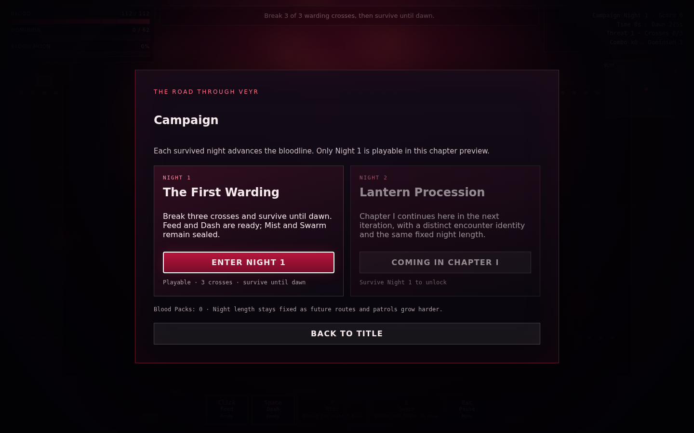
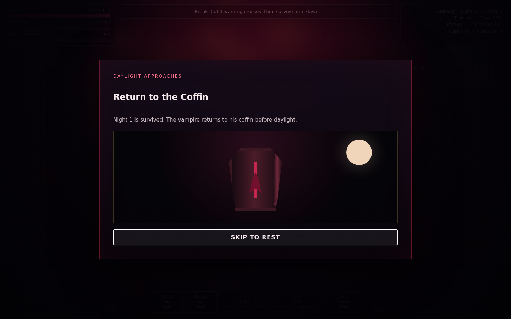
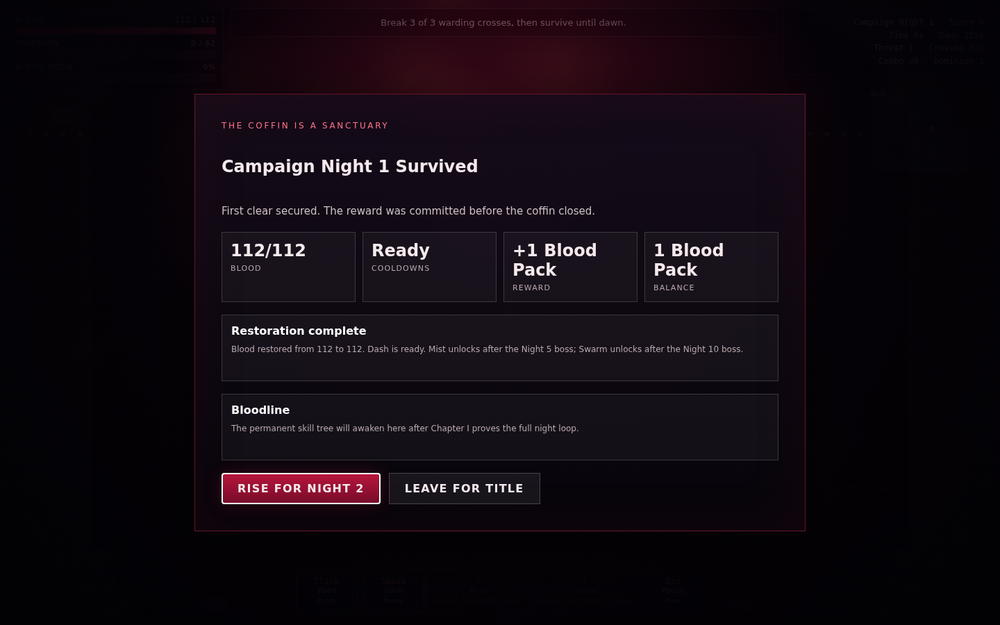
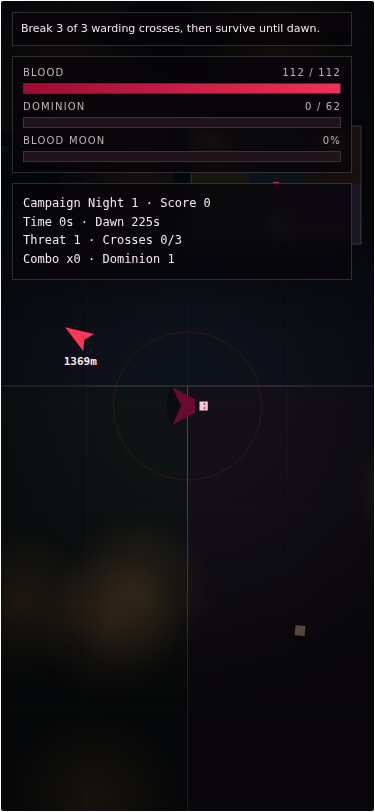

The first connected night
Iteration 33
Campaign Night 1 now flows from an exact warding-cross objective through dawn, an atomic first-clear, the vampire hopping into his coffin, full restoration, rewards, progression, and the next-night decision. Hunt proves that pressure can rise while the night length stays fixed.
Progress that cannot duplicate
The first clear, one Blood Pack, Night 2 unlock, score, and pending coffin result save together before the animation. Replays grant no second pack, reloads can resume the coffin, and save failures never enter it.
Verification
- 30 deterministic profile, progression, content, and concurrency tests pass.
- Live and archived standalone files are byte-identical at 128,305 bytes.
- Campaign, Hunt, save-failure, reload, normal motion, reduced motion, desktop, and phone flows pass in Chromium.
- Forty cross-route checks are unique, collision-free, and within the base-speed travel budget.
- A three-minute Nightmare Depth 2 soak reaches and safely holds the 108-enemy cap.
Visual evidence




Next: Iteration 34
Chapter I adds distinct Nights 2-5, Voss as the first milestone boss, the one-time Mist unlock, and full Hunt with fixed-duration nights and the spaced quota cadence 3,3,4,4,4,5,5,6,6,6....